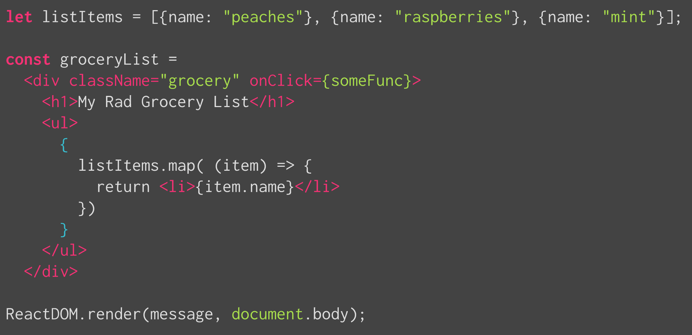
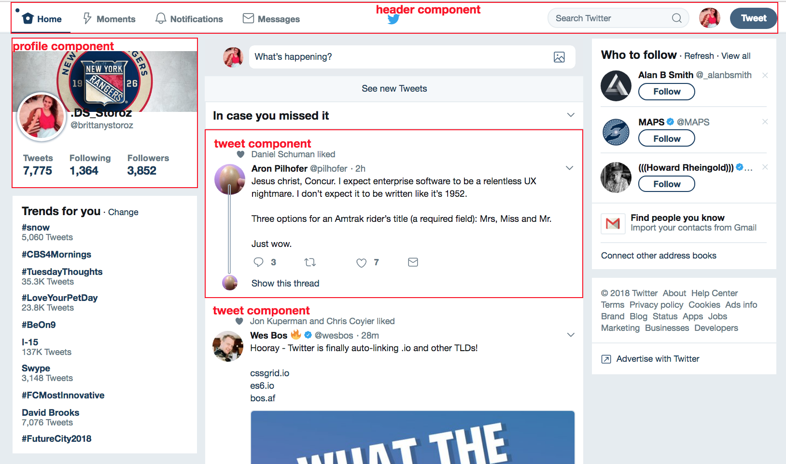

Module 2 | JavaScript » Frameworks
Students should be able to:
People will define React in many different ways, but at its core, React is:
a client-side JavaScript framework that allows you to easily and efficiently manipulate the DOM based on application data and how it changes in response to user interaction
Let's break this definition down a little bit.
The term framework is often used interchangeably with the term 'library', but they're actually a bit different. Libraries are usually a little bit smaller, and generally serve the purpose of providing us with abstractions over complex code that we would otherwise have to write ourselves. (Think jQuery.) Libraries are usually 'syntactic sugar' over something difficult.
Frameworks, on the other hand, offer us a bit more than just abstractions - they give us a lot more powerful ways to write our code, but at the same time, they prescribe a very strict and specific way for us to organize our code.
We'll see this demonstrated a bit better when we get into the code along, but React gives us a lot of cool features:
We'll go more in-depth into each of these features throughout the lesson, but for now just remember that in order to leverage all of these features, we have to write our code in a very specific way that React understands. This has implications on our directory structure, our separation of concerns, and the way we interact with our application through code.
Think about how you've previously interacted with the DOM, without the help of a framework. You maybe used vanilla JavaScript or jQuery to manipulate text or class names based on event listeners applied to certain selectors. Some of you may recognize how much effort goes into each of these DOM manipulations, some of you might think it hasn't been all that bad.
Trust me, it's bad.
Standard methods of DOM manipulation are tedious, slow and brittle. It requires us to manually target elements, it takes a long time for the browser to process DOM manipulations, and the amount of code it requires makes it really fragile. There are too many places where we could go wrong with a simple typo.
React solves all three of these problems by providing us with a Virtual DOM, which helps us reduce the amount of code and time it takes to update our UI. More on this later!
Think about all the content you see on a site like Facebook - user profiles, their posts, comments on those posts, etc. All of this is considered application data. One of the core differences between building a web site and building a web app is that web apps have to manage a large amount of data that can be manipulated by its users. For example, Facebook users can add and delete posts, edit comments, change their profile information, etc. A web application has to store and maintain all of this data even as it updates based on user interaction.
React allows us to ensure our application UI is displaying all the correct information at any given time, no matter how frequently it changes.
React is heavily focused on the interactive UI aspect of an application. While it can help you manage data as well, its main claim to fame is how easily we can create a highly interactive application with a UI that responds quickly to constantly changing data.
We mentioned a framework enforces a certain structure for your code. The way React requires us to set up our applications and break apart certain logic forces us to write modular applications by default. Modular applications are much more scalable and maintainable, and make future development and iterations easier.
We mentioned previously that a big benefit of React is how well it can handle DOM manipulations in an easy and efficient way. This is done through the use of a Virtual DOM. A Virtual DOM is a JavaScript object that represents a copy of a DOM structure. This provides us with a huge performance benefit, because accessing and updating a JavaScript object is much faster than accessing the true DOM directly.
React lets us alter this virtual DOM first, then renders the change for us - making the smallest amount of true DOM manipulations possible. React will only render the deltas of what actually needs to be changed, rather than making a massive DOM manipulation to elements on the page that aren't actually changing.
This idea of a Virtual DOM isn't unique to React. It's found in many other client-side frameworks, and can even be implemented with vanilla JavaScript, using DocumentFragments. Take a look at the following codepen:
See the Pen DocumentFragments Example by Brittany Storoz (@brittanystoroz) on CodePen.
If you run the jQuery solution to appending all of those elements to the DOM, then run the DocumentFragment solution, you'll see exactly how much of a performance benefit using a Virtual DOM gives us.
JSX is a special syntax that allows you to write HTML in your JavaScript, and JavaScript in your HTML. It's technically XML, but you can just think of it as HTML and JavaScript working together to create that Virtual DOM. The same way Babel converts ES6 into ES5, Webpack converts JSX into JavaScript and HTML.
JSX syntax takes some getting used to, and it might seem to fly in the face of what you know about "separation of concerns" - but after a bit of practice you'll find it becomes more intuitive. In the early days when we talked about separation of concerns, we thought: split up your HTML (content) from your CSS (presentation) from your interactivity (JavaScript). Now when we think about separating our concerns, we do it in a slightly more semantic, user-centric way. We're not bothered by mashing up our HTML, CSS and JavaScript in a single file, if all of that logic works together to create a single application feature. Our separation of concerns is now much more focused on the concerns of our users, rather than concerns about our file structure. We'll see this demonstrated a bit further later on in this lesson.
First, let's take a look at the JSX syntax:
What looks familiar? What looks different? You might notice the curly braces around things like onClick={someFunction}. These curly braces are allowing us to interpolate JavaScript in our HTML. Think about how you may have used template strings in vanilla JavaScript in the past: we use the ${} syntax to denote that this particular chunk of the string is a dynamic value that should be evaluated and parsed as a dynamic JavaScript value, rather than plain text. The curly braces in React give us similar functionality. Anywhere in our JSX where we want to tell our application "This is JavaScript, so don't render it character by character like HTML, we can wrap that code in curly braces to signal that.
Components are reusable pieces of code that represent templates for a particular instance of a UI element. Components can take in parameters that might vary from instance to instance, allowing us to create unique elements with a shared structure and style. The main benefit of components is how modular they are - they can snap or nest together to create complete pages and applications.
If we take a look at a website like Twitter, we can start to flesh out what components might be making up the entire page, and how they're being reused:
Pick a web app that you frequently use and try to break it down into components just by looking at it. Which components might be reused on the page? Which components might have components nested within them? Try to think of semantic names for each of the components you identify.
You'll hear the term 'component' used in many different areas of programming, and it might mean slightly different things depending on the context. In React, components have the following characteristics:
We'll start investigating these characteristics by practicing with stateless components.
Fork this repo and in your terminal, run npm install then npm start. Open up your app at localhost:8080 and you should see a simple string of text that says 'App!'
Stateless components are components that simply need to render content to the DOM, and do not need to be aware of any application data that might be changing. They are sometimes called "dumb" components. Stateless components are just functions that return the HTML you want rendered to the DOM.
Stateful components are ES6 classes that extend an abstract 'Component' class, given to us by default by React. They each have a render method that allows us to specify what should be rendered to the DOM, and they keep track of some sort of application data.
While React is focused heavily on the UI/visual layer of applications, it does allow for some data management through props and state.
We mentioned that components are reusable pieces of code, that allow us to create unique instances of certain UI elements. We can do this by passing props to each of our components. Think about how you create new instances of ES6 Classes - they share the same base, but you pass in different arguments every time you create a new instance, which allows each instance to vary slightly.
Props allow us to pass information from parent components to child components. We can pass strings, numbers, booleans, arrays, objects, functions, pretty much any piece of data we want access to in our child component. We can name them whatever we'd like, as long as we're consistent and semantic with the names that we choose.
When we pass props down to a child component, it comes through as a simple JavaScript object with key value pairs.
State is slightly different than props: state holds data that represents the actual state of our application. State can be changed and mutated through user interactions, whereas props should remain immutable.
One of the more confusing things about React is when to make a component stateful. A general rule of thumb to keep in mind is that, if you're not sure if a component should be stateless or stateful, start with a stateless component. Add state if you find that you need it. Stateful components are a lot heavier than stateless component. Keep your app as lean as possible!
Understanding the difference between props and state can be tricky. Read through the top three answers on this stackoverflow question, and go through any links or resources provided in the answers. Just because one answer has the most upvotes, doesn't mean it's going to be the one that makes everything click for you. Take your time reading through the explanations here.
You now have the basic tools and setup for building a React application. Try to implement an evil deed to-do list for our villians. It should include: